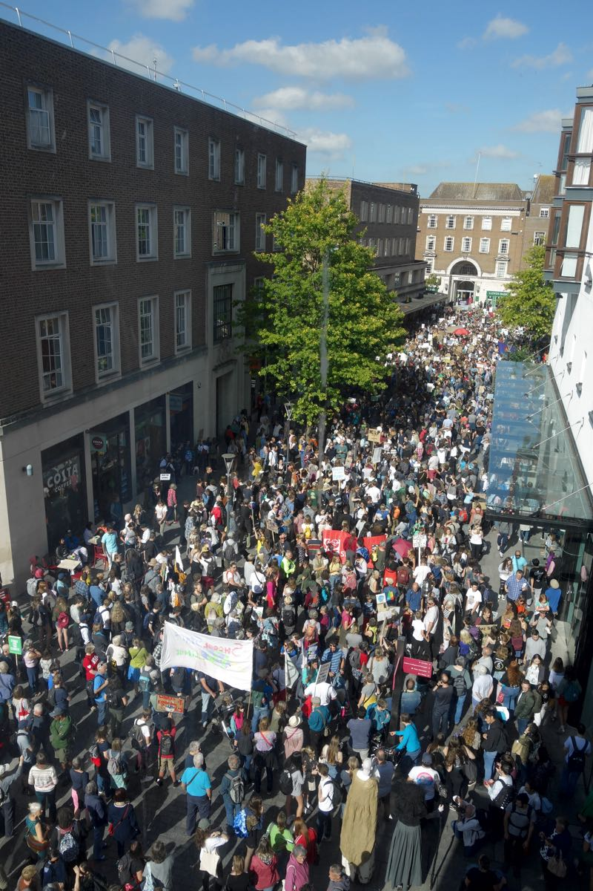
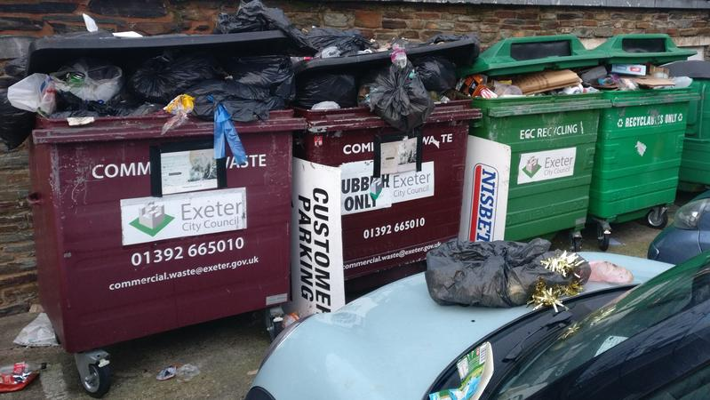
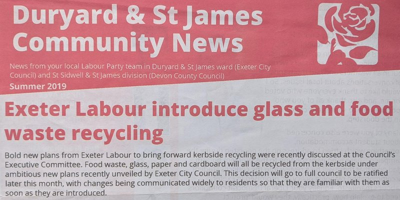
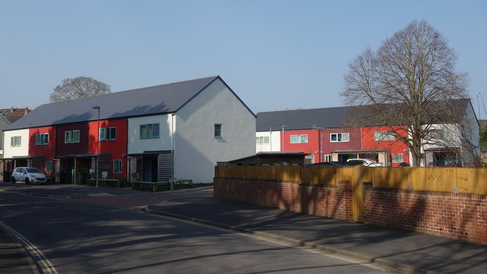
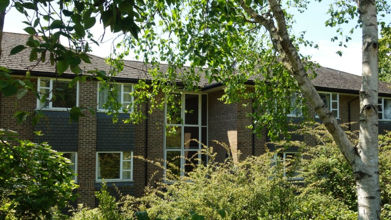

A fortnight ago we embarked on a 2022 local elections series aimed at providing a much-needed counterbalance to the mix of cheerleading and churnalism that is often delivered by Exeter’s media when it comes to local politics.
We looked at previous and current election campaign claims made by Exeter Labour, which will have been in control of the city council for ten straight years by election day on 5 May.
This will make it what the Electoral Reform Society calls a “one party council” with “weak electoral accountability” which greatly increases the likelihood of cronyism, corruption and spending decisions which offer poor value for public money.
In part one we focussed on the city’s housing crisis, debunking claims around housing delivery, publicly-funded developments on council land and the provision of affordable housing across the city, outlining the impact of university expansion on the city’s residential housing stock.
In part two we looked at the city centre and Exeter’s wider economy, examining claims about St. Sidwell’s Point, which has taken nearly ten years to build and cost £44 million — more than double its original £19.2 million budget — without catalysing the wider site redevelopment that was promised.
We also assessed Exeter Labour’s misuse of economic indicators to make unfounded claims about local wages and business vitality, and its misrepresentation of content marketing materials as authoritative sources of information about the city.
“In May 2021, the people of Exeter put their faith in Labour. We made promises to you and we are delivering on those promises.”
2022 Exeter Labour local elections campaign leaflet
Our scrutiny of the party in power continues with an examination of its campaign claims about climate crisis leadership, renewable energy, recycling, retrofitting and development standards as well as decisions to scrap council and city decarbonisation goals.
We asked Exeter Labour to respond to questions about these issues at the beginning of April, but it took more than a week to reply and still hasn’t provided any answers. We expected it to have the sources of its statements to hand, but it seems it does not.
We haven’t scrutinised Exeter’s other parties the same way because they haven’t been making the decisions for the past ten years and their policy proposals and attempts at intervention are routinely rejected or ignored. It’s the “Labour-led council” we seek to hold to account here, in the public interest and in the public sphere.
We’ve included the party’s 2022-23 manifesto to enable you to peruse its position in full as we cannot address all of the many claims it makes.
As last year, we’ll also publish an insider’s guide to who’s standing where in the city and what we might expect the results to look like, then offer a rolling results service complete with graphical analysis of vote shares and swings as the winners and losers are announced.
Subscribe to our free newsletter or follow us @exeterobserver to stay in the loop.
At the same time as Exeter Labour was putting the finishing touches to its 2022-23 manifesto last month, the IPCC was preparing the report of its sixth assessment (AR6) working group III for publication.
The report provides an authoritative up to date assessment of global climate change mitigation progress and pledges, delivering a final warning for policy-makers. It says greenhouse gas emissions must peak within three years to give the world a chance of meeting the targets set by the Paris Agreement in 2015.
Professor Jim Skea of Imperial College, who is a member of the UK Climate Change Committee and co-chair of the report working group said: “It’s now or never, if we want to limit global warming to 1.5°C. Without immediate and deep emissions reductions across all sectors, it will be impossible.”
UN secretary general António Guterres added: “Some government and business leaders are saying one thing – but doing another. Simply put, they are lying. And the results will be catastrophic.”
Unfortunately, as with Exeter’s housing situation and economic health, extreme scepticism is advised when it comes to Exeter Labour claims about the city’s climate crisis mitigation prospects.
As recently as last year the party was maintaining its aim that Exeter would become “an energy independent city by 2025” in election campaign leaflets, while other campaign materials repeated a claim promoted by Exeter City Futures that Exeter had the lowest carbon footprint among UK towns and cities.
A cursory glance at the details revealed numerous problems with the claim’s basis, but council leader Phil Bialyk and Labour councillors Matt Vizard, Duncan Wood, Marina Asvachin, Martin Pearce and Emma Morse all repeated it in turn.
These included the finding that Exeter’s carbon footprint was 11.6 tCO2e (tonnes of carbon dioxide equivalent – a measure covering the seven main greenhouse gases) per person per annum. This would make the city’s total annual carbon footprint nearly 1.2 million tCO2e more than the 329,000 tCO2e accounted for in the Net Zero Exeter plan.
Six months later Labour councillor Rachel Sutton, who is the executive member with responsibility for Net Zero Exeter 2030, nevertheless said that Exeter was “in the vanguard of this nationwide challenge” and was “one of the few councils in the country to have set out a road map that was both deliverable and practical”.
Her comments followed a council press release in which it said it had put fighting climate change “at the top of its agenda”, quoting a pledge by council leader Phil Bialyk that the “ambition of creating a net zero carbon city by 2030 will be at the heart of everything the council does going forward”.
This year’s Exeter Labour election manifesto and its party campaign leaflets all repeat the pledge despite Exeter’s decarbonisation plans scoring just 61% in the first national ranking of council climate action plans.
Exeter scored higher than it would otherwise have done because its Net Zero Exeter plan was assessed in combination with the interim Devon Carbon Plan. Had the city’s plan been considered alone it would have fared worse still, particularly in key areas including goal definition, monitoring, evaluation, stakeholder involvement and communications.
Almost all the actions proposed by the plan, which was produced by Exeter City Futures and adopted by the council in July last year, are framed as vaguely-defined activities, rather than focussed on specific outcomes, and very few include quantifiable measures of success. Dozens of these actions are supposed to be complete by the end of this year, yet almost none have begun.
Despite this the city council and its partners continue to claim, repeatedly, in press releases and policy documents that the plan provides “a clear roadmap to carbon neutrality”.
Last year’s Exeter Labour local elections manifesto echoes this claim, but this year’s manifesto doesn’t mention the plan at all.
And it is now clear that the city council’s chief executive Karime Hassan (who now also works for Exeter City Futures) already viewed decarbonisation as a property development and capital investment opportunity when the council adopted the plan nearly two years ago.
Exeter City Council Net Zero Exeter 2030 plan adoption decision
It is also now clear that despite being panicked into verbally expressing support for carbon neutrality when first confronted by Exeter’s youth climate strikers in February 2019, Exeter Labour had a very limited understanding of what reducing the city’s carbon footprint to sustainable levels would actually involve.
When then-Green Party councillor Chris Musgrave proposed a motion that the council declare a climate emergency a fortnight after the first school strike, Exeter Labour rejected it.
His motion, seconded by Liberal Democrat Kevin Mitchell, committed Exeter to carbon neutrality by 2030, taking into account both production and consumption emissions, and set a deadline for the council to produce an initial climate mitigation strategy and action plan by August that year, also fixing subsequent progress review dates.
However council leader Phil Bialyk, seconded by Labour councillor Rachel Sutton, removed all the references to a climate emergency and deleted most of the motion including the resolution to produce and implement an action plan.
Exeter Labour then unaccountably proposed and passed its own climate emergency declaration motion instead, five months later.
Bizarrely, Labour councillor David Harvey revisited this motion two years afterwards, in April last year, to declare an ecological emergency too. As the new motion added nothing of substance to the previous motion, it is hard to avoid the conclusion that this use of council time was related to his campaign for re-election at the local elections the following week.
The party may also have wanted to airbrush over its failure to get to grips with the climate crisis during the previous two years. It certainly made much of this motion in its 2021 manifesto and hasn’t missed the opportunity to mention it again in this year’s campaign leaflets and manifesto, where its belated climate emergency declaration features as a key achievement from last year.
We might expect another, similar, motion next year too, for the same reason.
 Exeter’s global climate strike fills Bedford Street in September 2019.
When Labour councillor David Harvey brought this motion forward, Green Party councillor Diana Moore and Liberal Democrat councillor Kevin Mitchell sought to amend it to include a carbon budget and annual audit for both the city and the city council, and to create a citizen’s assembly to better engage Exeter’s communities with the climate crisis.
The Labour group voted both these proposals down, despite the primary recommendation of a September 2020 report by engineering consultants WSP commissioned by Exeter City Futures to review the Net Zero Exeter plan’s main goals.
The report said that a baseline model of Exeter’s greenhouse gas emissions should be created to “allow better analysis and comparison of actions, as well as mapping of ‘business as usual’ and tracking of progress”. Its feedback included that “clarity would be useful on why goals are chosen” and that the overall carbon emissions reduction claims needed “recalculating”.
Six months later, during COP26, Exeter’s Green Party councillors called for a city carbon budget again, based on a properly calculated baseline greenhouse gas emissions inventory and specifying the annual reductions required to meet its decarbonisation goals.
They also called for an annual report demonstrating progress towards these goals and evaluating the contribution of the Net Zero Exeter plan towards them.
The council agreed, but it emerged last month that it had quietly decided to exclude scope 3 emissions from the Exeter emissions baseline. The decision to do so was buried in the minutes of a council committee meeting.
As scope 3 emissions may constitute as much as 50% or more of the city’s carbon footprint, partly because of its low levels of carbon-intensive industrial activity, this decision has effectively ensured the city will not meet its “Net Zero Exeter 2030” goal.
Production vs consumption based emissions by category from The Future Of Urban Consumption in a 1.5°C World, University of Leeds, ARUP & C40 Cities
Bizarrely the council told us that it had excluded these emissions from the city’s carbon plans on the basis of the decision councillors had made to commission the Exeter emissions baseline inventory, despite neither of the decisions taken by councillors to commission a carbon budget mentioning any such exclusion.
The council refused to say who had selectively interpreted these decisions this way.
However in March last year the council’s chief executive Karime Hassan had expressed doubt that the council would be able to “deliver carbon neutral aspirations for Exeter by 2030”.
Several potential causes for the delivery failure risk were identified, including the “political environment”, the “economics of carbon reduction” and “behavioural challenges”.
They also included the council’s “technical capability to deliver”, “lack of control over all stakeholders” and “failure to engage with residents and businesses of Exeter to ensure solutions proposed meet real need”.
The council says it thinks of itself as a “municipal entrepreneur, ring master and story teller”, so perhaps it is in this mode that it selectively interpreted the decisions about Exeter’s decarbonisation goals made by councillors on our behalf.
It seems also to have selectively interpreted its commitment to the so-called “Exeter Vision 2040”, which includes being “recognised as a leading sustainable city and global leader in addressing the social, economic and environmental challenges of climate change and urbanisation”.
Somerset West and Taunton Council came top of the Climate Emergency UK council climate action plan rankings with a score of 92% partly because its comprehensive carbon reduction and climate change resilience action plan includes scope 3 emissions.
It seems to be “leading the way on climate change and the green agenda” among UK councils, notwithstanding MP Ben Bradshaw’s claim that Exeter’s Labour council is doing so in the party’s 2022 election campaign leaflets.
Typology of climate delay discourses. Source: Discourses of climate delay under CC BY 4.0 license.
Exeter City Council hasn’t even got a grip on its own carbon footprint. When council leader Phil Bialyk deleted most of Chris Musgrave’s climate emergency motion in February 2019, he claimed to be “on track to deliver an energy-neutral council by 2022”, a claim that Exeter Labour repeated in its election campaign leaflets the same year.
But in September last year the council decided to scrap its ostensible goal of achieving carbon neutral operations by 2022, not only on the basis that it was deemed “unachievable” but also that the council hadn’t actually passed a resolution to achieve it in the first place.
This goal had been on the council’s risk register since November 2019, since when it had been repeatedly reviewed. It seems the council had been confusing its energy policy with a non-existent corporate decarbonisation plan for the previous two years.
At the same meeting at which the confusion was discovered, Liberal Democrat councillor Michael Mitchell and Conservative councillor Anne Jobson proposed a new risk register item to monitor the council’s ability to meet the 2030 decarbonisation target set for the city.
While the meeting agreed the proposal, the council said it would not be able to deliver it until March this year.
This is the proposal that led to the commitment to “assessing all our future policies against a carbon risk assessment” that appears in this year’s Exeter Labour election campaign leaflets.
The party also claimed to have delivered “carbon savings of 550 tonnes” (presumably tCO2e) during the previous year, which Labour councillor David Harvey touted as evidence that the council had recognised the scale of the challenge in his belated climate emergency declaration motion.
The council’s current annual corporate carbon footprint is 52,973 tCO2e, of which more than two-thirds is in scope 3. Of this total 550 tCO2e constitutes just 1%.
Woman holding baby at Exeter youth climate strike in Bedford Street. Photo: Vanessa Miles.
Unfortunately this claim, among others made by Exeter Labour, suggests it has still to develop sufficient understanding to grasp the significance, or otherwise, of the climate mitigation actions it has so far taken.
During last year’s election campaign it made much of the 1.5MW (megawatt) solar panel array the council has installed at the Matford Centre, and the prospect of an additional 1.2MW solar array at Salmonpool swing bridge, a £3.5 million project for which the council will receive £1.6 million in EU funding.
Exeter Labour’s 2022 campaign leaflets nevertheless say the full project cost will be met by the grant. And despite its manifesto saying the project would be completed by now, it is not.
When it is finished, the council’s 2.7MW solar arrays combined will produce around 2,500MWh of electricity each year (based on the output from the existing array).
To put this into perspective, a 2017 report commissioned by Exeter City Futures found that Greater Exeter’s total annual energy consumption was 10TWh (terawatt hours) in 2014, and was set to increase to 11.3TWh by 2025.
A terawatt is equal to one million megawatts, so the council’s arrays combined will produce energy equivalent to around 0.02% of Greater Exeter’s expected energy use three years from now.
Iceland, which has a population similar to Greater Exeter while also being rich in renewable energy resources, has been generating 100% of its electricity (and 87% of its hot water and heating) from renewables for the past decade.
 Overflowing council rubbish bins in Exeter city centre
Exeter Labour’s confusion over the impact of the Marsh Barton waste incinerator is similar. In its 2020 manifesto (for the elections which were postponed because of the pandemic) it said the incinerator produced 23,000MW of what it called “low-carbon energy” in 2018 by burning 60,000 tonnes of waste.
But the Devon County Council facility, which is expected to remain in use until 2050, is Exeter’s largest single source of carbon emissions: its waste incineration generated nearly 51,000 tCO2e in 2018, almost as much as the city council’s total corporate carbon footprint now.
And just after last year’s local elections a council-financed scheme to connect the incinerator to a district heating network to supply the 2,500 new homes which are to be built as part of the South West Exeter extension had to be abandoned because most of the property developers involved were unwilling to accept modest additional up front costs.
The council had said it was so confident about the scheme that an advance payment of £50,000 had been made for preliminary infrastructure works to take place.
 Exeter Labour summer 2019 campaign leaflet
Exeter Labour also seems to be in disarray over the city’s recycling collection services. Exeter has among the lowest recycling rates in the country. It recycled just 27.59% of the 42,000 tonnes of waste it collected in 2020-21. Neighbouring East Devon District Council is in the top ten with a recycling rate of nearly 60% of 48,500 tonnes of waste.
This poor performance is principally the result of the council’s failure to introduce kerbside food waste collections, despite promising to do so in its 2016 election manifesto and announcing its was about to do so in 2019.
Labour councillor David Harvey said: “I am pleased to be able to announce these plans which are something we have been working towards for a long time now.” Council leader Phil Bialyk added: “This is another example of Labour delivering for Exeter”.
In the 2020 manifesto, the claim that the council was on the verge of introducing the new scheme became “ambitious plans to introduce a kerbside collection in 2021, collecting paper, glass and food waste from the kerbside” which, it was hoped, would increase the city’s recycling rate to “well over 50%”.
The party then claimed in March last year that the council was “preparing to deliver on its commitment to provide food waste and glass collection from every household in the city”.
The council only managed to introduce a single food waste collection round in Alphington in November last year, eight months later, using a single second-hand truck which was all it had been able to buy because it had apparently not foreseen a demand for such vehicles.
Front cover cutting from Autumn 2019 edition of Exeter Citizen
It recently laid out a litany of excuses for its failures around food waste and glass recycling, many of which were related to its decision to change its previous, long-considered, plan to introduce a kerbside sorting service like the one which enables East Devon to recycle such a high proportion of its household waste.
The primary reason that was offered for this change of course was that the council hadn’t been sufficiently familiar with Exeter’s streets to realise that new vehicles might be too big for them.
While Exeter Labour’s 2022 campaign leaflets claim it will extend the food waste collection service this year, and that it is still committed to introducing a kerbside glass collection service, they include no delivery timetable. The council admits it has no idea when either will happen.
Nor does the party explain that glass collection will save the 1,200 tCO2e per annum it cites only when the whole city is covered.
Its 2022 manifesto is more circumspect, only mentioning recycling once, in relation to a coffee machine pod collection service which is delivered in partnership with various corporate coffee machine brands.
The 1,300 dwellings in Alphington that now receive a collection service constitute just over 2% of Exeter’s housing stock. Most Exeter food waste is still being burned in the Marsh Barton incinerator, and what is now being collected has to be driven eight miles east to Greendale Business Park then 50 miles the other way to a processing plant in Holsworthy.
Overflowing council recycling bins at Magdalen Road car park
Waste collection and processing is just one among the many climate change mitigations that local councils must deliver: increasing the energy efficiency of housing is another.
In part one of this series we assessed Exeter Labour’s 2022 manifesto pledge to build 500 council houses in the next five years against its existing delivery capacity — it has built 89 council homes since 2009 and is struggling to find subcontractors — and concluded there is little chance it will succeed.
Those it does construct are built to high energy efficiency standards, although as the council has been building its housing to these standards, which were developed in the 1990s, for the past thirteen years we’re not sure how doing so sets “new standards for housing in Exeter” as the party’s manifesto claims.
Meanwhile the council’s retrofitting project to improve the energy efficiency of its existing 4,800 council houses has been helped by a £1.6 million government grant. But there are discrepancies between the various claims that Exeter Labour has made about its progress.
In his 2022-23 budget speech council leader Phil Bialyk said: “370 properties will be completed by April 2022” with “another 250 properties targeted for completion during 2022-23”. Its election campaign leaflets say “over 400” have been completed with “400 more” due “by spring 2023”. And the party’s manifesto says it “will have completed 400” by “the end of 2022”.
The party claims its retrofits deliver carbon emissions reductions of “over 3 tonnes per property” (presumably tCO2e) in its manifesto, which it says will have reduced Exeter’s carbon emissions by “around 12,000 tonnes” by the end of 2022. It is unclear how this figure is derived: 400 homes at 3 tonnes each equals 1,200 tonnes not 12,000.
In his budget speech council leader Phil Bialyk said the retrofit programme would “upgrade council properties to achieve carbon neutrality”. However the programme does not deliver the same energy efficiency standard to which the council builds new homes, and the 22 new council houses it has constructed in the past three years all have ‘B’ grade energy performance ratings and gas boilers.
Household carbon emissions are driven by much more than simply energy consumption, although it does play an important role. Witness the the off-road car parking which the council has provided with all its new houses, none of which are fitted with electric vehicle charging points.
 Exeter City Council houses at Bovemoors Lane
At a rate of 250 dwellings per annum it will take around eighteen years to retrofit Exeter’s remaining council housing stock. The city’s other 52,000 dwellings present a much more significant challenge, not least because of an ongoing dispute about whether the council should have anything to do with retrofitting them at all.
In June 2020 it allocated £300,000 to develop business cases for three new council-owned companies, one of which was to provide retrofit solutions for non-council housing.
In November that year the council’s chief executive Karime Hassan said it would be “reasonable to assume that any mechanism put in place to support retrofit solutions will be a mixture of private and public sector funding”.
In April last year he decided, in private, in his role as the council-owned companies shareholder representative, not to pursue the council retrofit company.
Then in November last year, at the council executive meeting which discussed his move to become CEO of Exeter City Futures, he said retrofitting the non-council housing stock would be “exactly what Exeter City Futures will do”.
At the same time Exeter Labour’s manifesto is silent on environmental standards for non-council development in the city despite the council being responsible for those standards as the local planning authority.
The whole life carbon assessment approach advocated by the Royal Institute of Chartered Surveyors, which addresses the embodied and operational impacts of construction processes, including refurbishment, across the spectrum, is described as “the most comprehensive and consistent approach available to the industry” by the Royal Institute of British Architects.
It also covers development which involves the demolition of existing buildings, which often entails a much higher carbon footprint than re-use no matter how energy efficient the resulting new structures are.
The new London Plan, which was adopted by the Greater London Authority in March last year, includes a whole life carbon or greenhouse gas emission assessment policy. And the adoption of such policies is under way in other councils too.
In June last year Labour councillor Emma Morse, who is the executive member with responsibility for city development, was asked to explain the extent to which embodied carbon emissions from new development, including emissions from development site demolition, are taken into account when the council determines planning applications.
She said that it does not assess embodied carbon emissions in Exeter development.
She was then asked whether the council recognised that the absence of such assessment will make it difficult to achieve its Net Zero Exeter 2030 target. She deferred her answer, then replied in writing, saying that that council “is leading by example in terms of promoting sustainable, high quality development”.

Construction carbon lifecycle diagram. Image: University of Liverpool Zero Carbon Research Institute.
As the council does not consider embodied carbon in new developments, however large, it is unable to assess their true environmental impact.
Like HS2, large projects such as St. Sidwell’s Point, which relies on extensive use of very high impact materials such as concrete and steel in its construction, could actually be net carbon emitters over their lifespan despite being ostensibly green.
And the council does not even enforce the environmental standards for development set out in its own planning policies.
A striking example of this is the approval it gave the university last year to demolish 30 buildings to construct ~50,000m2 of new student accommodation on a fifteen acre Streatham campus site. The development will entail the destruction of an established ecosystem and the demolition of buildings which are less than twenty years old.
The council colluded with the university to allow both to lower their environmental standards: both are supposed to be committed to BREEAM Excellent or better for all new non-domestic development, which is still far short of the standards set by BREEAM Outstanding or whole life carbon assessment.
 University of Exeter Clydesdale Rise student accommodation buildings earmarked for demolition
The council also circumnavigates high environmental standards in Exeter domestic development.
It said it would prepare a Code for Sustainable Homes to improve these standards in December 2019, which it said it would adopt by January 2021.
Then six months later it announced it would instead wait for the outcome of the government’s Future Homes Standard consultation on energy efficiency requirements for new buildings.
The government consultation finished in February 2020 and the outcome was published in January 2021, but the council waited until June last year to say it had decided to postpone the introduction of new policy until the new Exeter Local Plan is adopted, which will not be until June 2024 at the earliest. It is unlikely the council will keep to its delivery schedule.
Even though a new local plan had already been delayed by five years by the failed Greater Exeter Strategic Plan, with a replacement not due for at least another three years, the council said it would scrap the planned Code for Sustainable Homes.
The Net Zero Exeter plan nevertheless says the city council should “refine local planning policy so that it requires the highest energy efficiency standards” by the end of 2022.
Somerset West and Taunton Council, despite also having already begun development of a new local plan development process, introduced an interim “climate positive” planning policy in February last year which has had significant weight in its local planning decisions since.


{kind=link}
{kind=link}